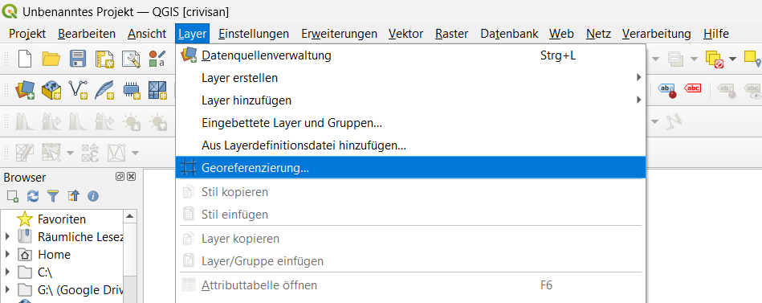
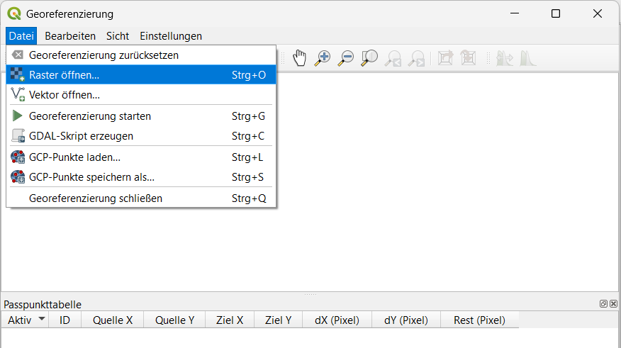
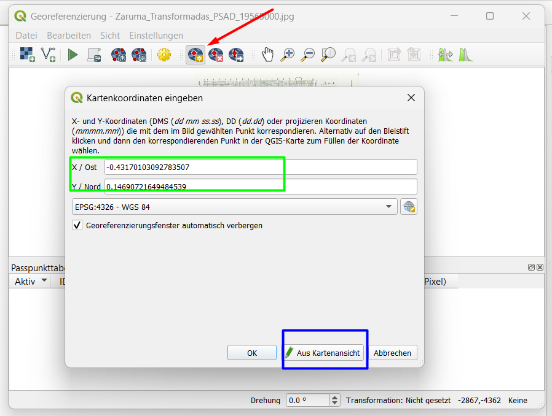
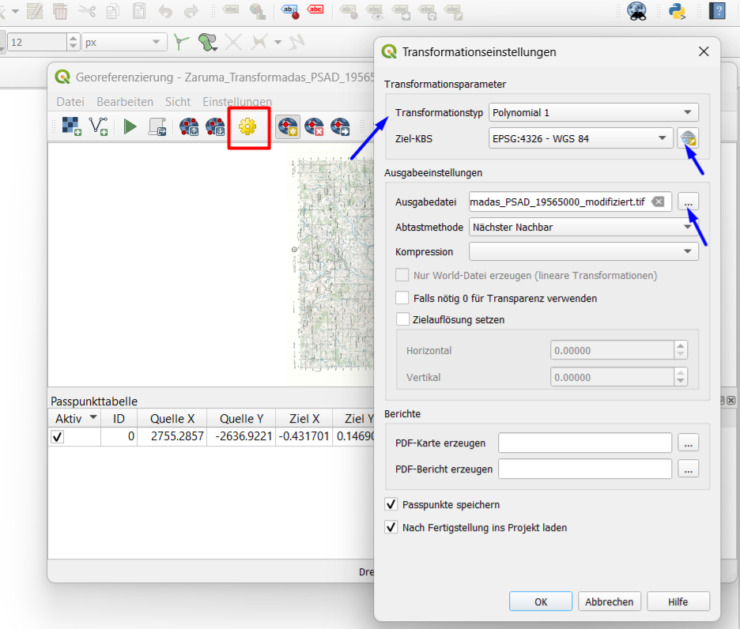

Georeferencing
Theorie: Was ist Georeferencing?
Georeferencing bedeutet, einer gescannten Karte oder einem Bild ohne Raumbezug echte Koordinaten zu geben.
| Begriff | Bedeutung |
|---|---|
| GCP | Ground Control Point – bekannter Punkt auf dem Scan und in der Realität |
| Transformation | Mathematische Berechnung, die das Bild verzerrt |
| Resampling | Neuberechnung der Pixelwerte |
Schritt-für-Schritt
1. Georeferencer öffnen
Layer → Georeferencer

2. Rasterbild laden
Klicken Sie auf Raster öffnen und wählen Sie Ihre gescannte Datei (z.B. .jpg, .png, .tif, .pdf).

3. GCPs setzen
Setzen Sie mindestens 4 Passpunkte.
- Klicken Sie auf einen markanten Punkt im Scan (z.B. Kreuzung, Kirchturm)
- Klicken Sie im Kartenfenster auf die gleiche Stelle (OpenStreetMap als Referenz)
- Die Koordinaten werden automatisch übernommen
- Wiederholen Sie dies für weitere Punkte
| GCP | Im Scan | Auf der Referenzkarte |
|---|---|---|
| 1 | Markante Kreuzung | Gleiche Kreuzung |
| 2 | Gebäudeecke | Gleiche Gebäudeecke |
| 3 | Brücke | Gleiche Brücke |
| 4 | Platz | Gleicher Platz |

4. Transformationseinstellungen
Klicken Sie auf Transformationseinstellungen (Zahnrad-Symbol)
| Einstellung | Wert |
|---|---|
| Transformation | Helmert oder Polynomisch 1 |
| Resampling | Bilinear oder Nächste Nachbarschaft |
| Ziel-CRS | EPSG:25832 (für Deutschland) |
| Ausgabedatei | georeferenziert.tif |
| Zielauflösung | Pixelgröße in Metern (z.B. 1) |

5. Georeferencing starten
Klicken Sie auf den grünen Pfeil (Georeferencing starten).
6. Ergebnis prüfen
Laden Sie die Ausgabedatei in QGIS und überprüfen Sie, ob sie korrekt liegt.
Tipps
- Je mehr GCPs, desto genauer (mindestens 4, besser 6-8)
- Verteilen Sie die Punkte gleichmäßig über das Bild
- Vermeiden Sie Punkte, die alle auf einer Linie liegen
- Kontrollieren Sie den Fehler (RMS) – kleine Werte sind gut